Kibana Guide: Share, Export and Move Dashboards
|
This content was generated with the assistance of AI and should be verified against the official documentation before being relied on in production. |
Checked on 2026-11-11 against Kibana 9.5.x.
What you build
You get the dashboard Bookshelf (guides) to other people and other places in five ways. You copy a link with a frozen time range, you copy an embed code for a web page, you generate a PDF and a PNG report and find them in the report list, you export the dashboard with its data view as a saved objects file, and you move it into a new space, once with Copy to spaces and once by importing the file. At the end you duplicate a managed dashboard, which cannot be edited in place.
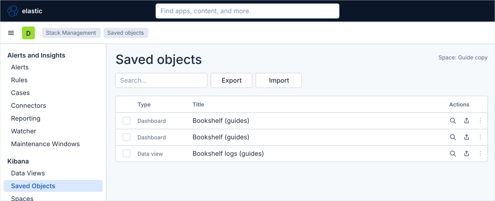
Before you start
-
Start the Kibana profile of the hands-on lab and wait about a minute:
cd lab docker compose --profile kibana up -d -
Open http://localhost:5601 and sign in as
elasticwith the passwordlab-elastic-password. When Kibana opens its full-screen welcome page, click Explore on my own. -
Do the previous guide, Arrange and connect a dashboard, which finishes the dashboard Bookshelf (guides) and creates its copy Bookshelf details (guides). The steps about the managed dashboard also use the sample dashboard [Logs] Web Traffic of the guide First steps in Kibana.
-
The lab runs a trial licence, which enables the PDF and PNG reports and Schedule export; with the basic licence the report entries are absent. The user
elastichas every privilege the guide needs. -
The guide was checked on Elasticsearch and Kibana 9.5.6 up to the menus: the Share dialog, the Export menu, the More menu and the Stack Management menu were read in the lab. A PDF or PNG report was not generated and downloaded end to end, and the pages of the report list, of Saved objects and of the copy and import dialogs are drawn from the Elastic documentation, so look for a control by its name when it is not where a figure shows it. The figures are drawings of the Kibana 9.5 user interface, not screenshots, so small details can differ from your screen. A highlighted box with a number marks the control of the step with the same number.
Steps
The first part works on the dashboard in view mode, the rest in Stack Management, which has one left menu for the pages of this guide. The maps of the dashboard and the Lens editor are in the guide Create a dashboard and the first Lens panel; this guide does not change the dashboard, so it does not need them.
Share a link and an embed code
-
Click the menu button (Toggle primary navigation) at the left of the second bar. Under Analytics, click Dashboards, then click Bookshelf (guides).
-
Click Share in the second bar.
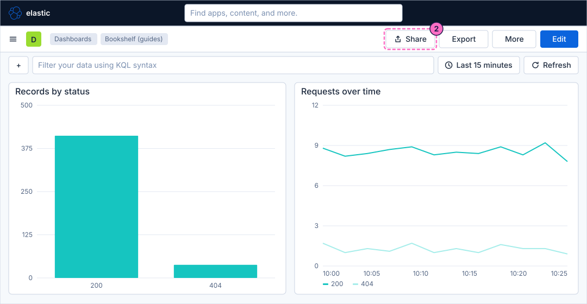
-
In the dialog Share dashboard, on the tab Link, turn on Use absolute time range, so that the link opens the period you see now and not the latest one.
-
Click Copy link. Paste the link in a new browser tab to check it. The line Permissions of the dialog is the setting of who can edit the dashboard (Default, Can edit or Can view for everybody in the space); leave it as it is.
-
Click the tab Embed.
-
Choose what the frame includes, for example the filter bar and the time filter.
-
Click the button that copies the iframe code, and close the dialog. The viewer of an embedded dashboard still has to sign in to Kibana.
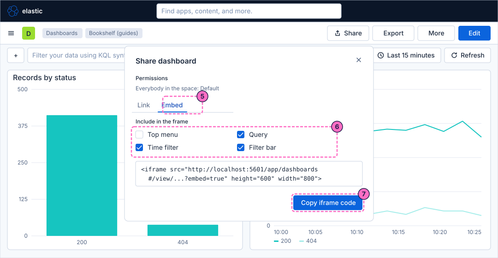
Export PDF and PNG reports
-
Click Export in the second bar. The menu lists Export JSON, PDF reports, PNG reports and Schedule export.
-
Click PDF reports.
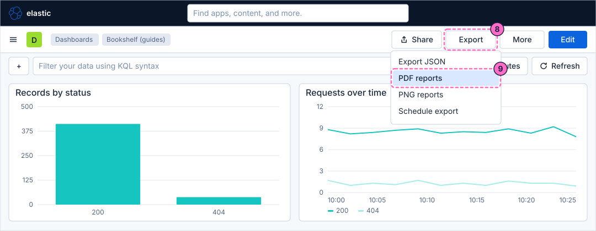
-
In the flyout that opens, click the button that generates the report. Kibana queues the job and the report is built in the background.
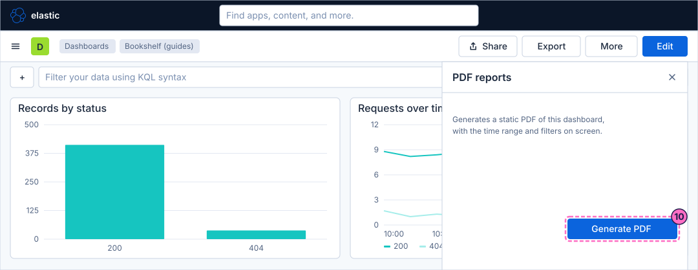
-
Open Export again, click PNG reports and click the button that generates the report, as in the steps 8 to 10.
Find the reports
-
Open the primary navigation and, under Management, click Stack Management. In the left menu, under Alerts and Insights, click Reporting.
-
In the list, find the rows of your two reports. When a report is finished, use the download action of its row.
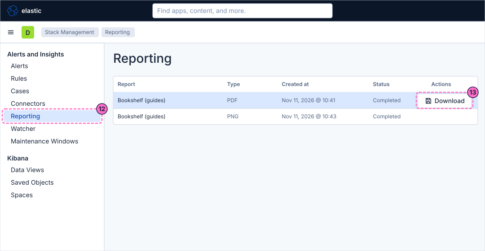
Export saved objects and read their relationships
-
In the left menu of Stack Management, under Kibana, click Saved Objects.
-
Tick the checkbox of the row Bookshelf (guides), the dashboard.
-
Click Export. In the dialog that opens, keep the option that includes the related objects turned on and confirm the export. Kibana downloads a file with the extension
ndjson: keep it for the step 31. -
Click the Relationships action of the same row. The list shows the objects the dashboard depends on, among them the data view Bookshelf logs (guides). Close it.
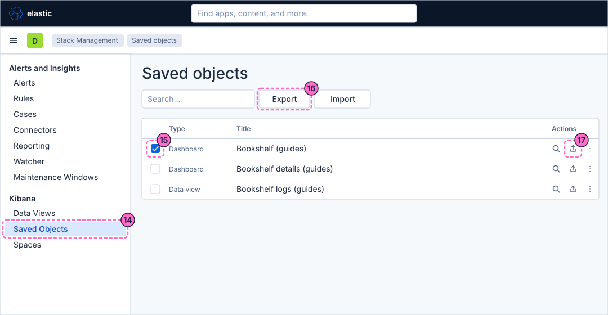
Copy the dashboard to another space
-
In the left menu, under Kibana, click Spaces, then click the button that creates a space.
-
In Name, type
Guide copy. -
Check that URL identifier shows
guide-copy. The identifier cannot be changed once the space exists. -
Click Create space.
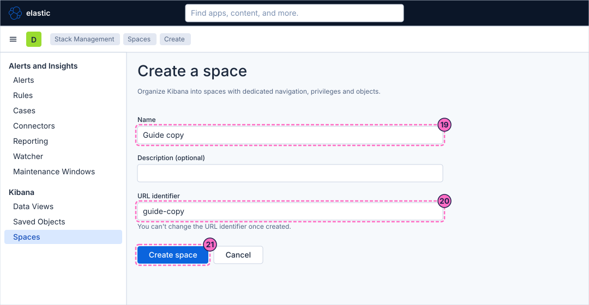
-
Go back to Saved Objects, as in step 14, and open the actions menu of the row Bookshelf (guides).
-
In the menu, click Copy to spaces.
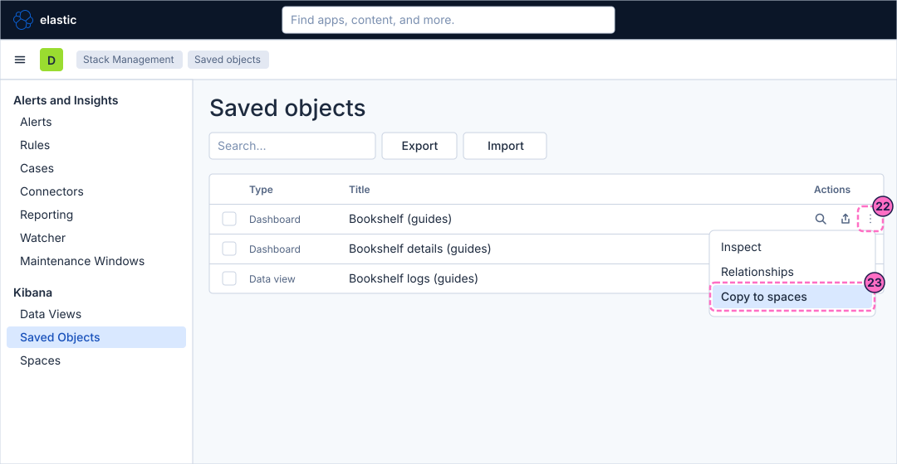
-
In the flyout, select the space Guide copy.
-
Keep the related saved objects included, so that the data view travels with the dashboard.
-
Click the button that copies the objects, read the result for each object and close the flyout.
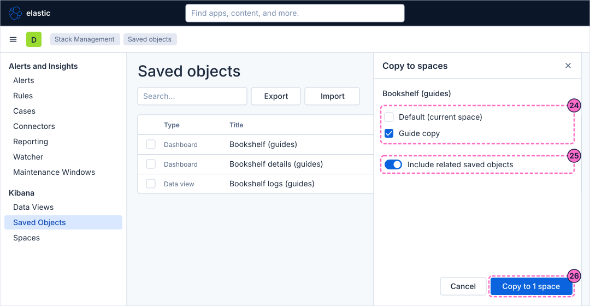
Import the file into the new space
-
Click the green space avatar at the left of the second bar.
-
In the list of spaces, click Guide copy. Kibana reloads in that space.
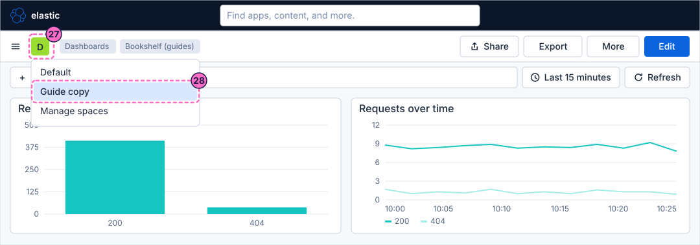
-
Open Saved Objects in Stack Management and check that the dashboard Bookshelf (guides) and the data view Bookshelf logs (guides) are in the list: they came with Copy to spaces.
-
Click Import.
-
In the flyout, select the file you exported in step 16.
-
As the way to handle conflicts, select Create new objects with random IDs, because the same objects already exist in this space.
-
Click Import in the flyout and close it when the import is done.
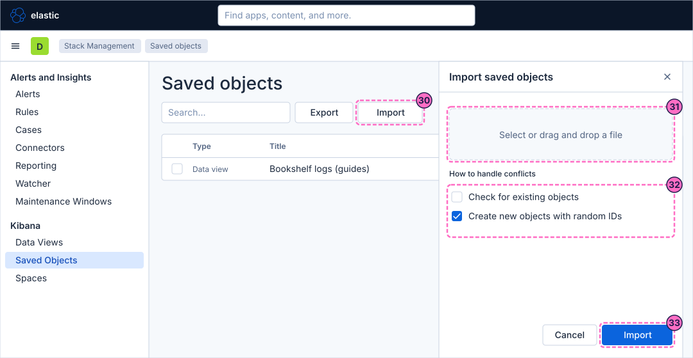
Duplicate a managed dashboard
-
Switch back to the Default space with the space avatar, as in step 27.
-
Open Dashboards and then the sample dashboard [Logs] Web Traffic. A dashboard that comes with an integration, and that Kibana marks with the Managed badge, cannot be edited in place; you duplicate it and edit the copy.
-
Click More in the second bar.
-
Click Duplicate.
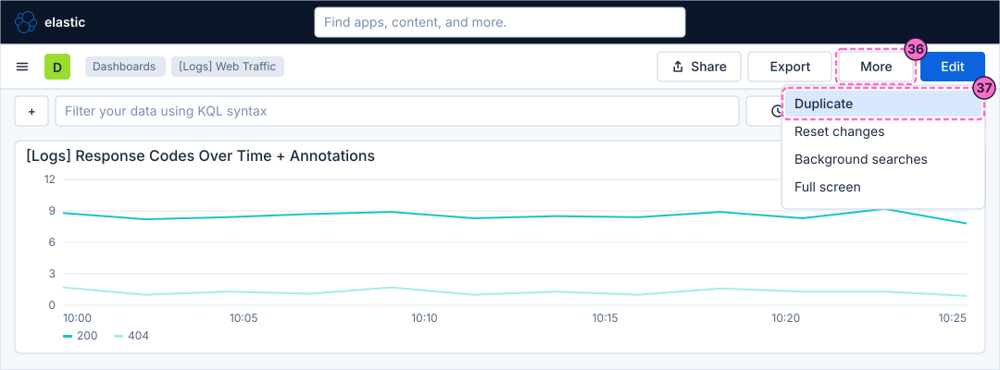
-
In the dialog, type
Web Traffic (guides)as the title and confirm it. Kibana opens the copy, which you can edit.
Check the result
-
The copied link opens the dashboard with the period you froze; the link without the switch would open the latest range.
-
The two reports are in Stack Management → Alerts and Insights → Reporting. If a report did not appear, see the table below.
-
In the space Guide copy, Saved Objects lists the dashboard twice and the data view once or twice, as in the result figure at the top. Open Dashboards in that space and open one of the copies: the panels must draw.
-
From a terminal, list the dashboards of the space:
curl -s -u elastic:lab-elastic-password 'http://localhost:5601/s/guide-copy/api/saved_objects/_find?type=dashboard' -
The load generator does not matter for this guide; if you changed its mode, restore it with
curl -X POST localhost:8090/mode/normal.
Variations
-
Use Schedule export to repeat a report every day; it also needs an e-mail connector, which the lab does not have.
-
Export the dashboard as JSON with Export → Export JSON and read the file; it describes the panels without the data views.
-
Send the saved objects through the API, as the reference page shows, to move a dashboard between two Kibana instances from a script.
What can go wrong
| Symptom | Cause | Fix |
|---|---|---|
PDF reports and PNG reports are missing from the Export menu |
The licence has no reporting, or you lack the privilege to generate reports. |
Use the lab’s trial licence and the user |
A report stays queued or fails |
The capture runs in a headless browser inside the Kibana container, which can be slow or short of memory or libraries. |
Wait, open Reporting to read the status, and retry with a smaller window or a smaller dashboard. |
The embedded dashboard stays blank |
The browser refuses to show Kibana in a frame, or the viewer is not signed in. |
Check the framing settings of Kibana and the browser console; the reference page lists the two settings. |
The imported dashboard is a second copy |
Create new objects with random IDs creates new objects instead of replacing the existing ones. |
Choose Check for existing objects when you want to replace them. |
The copied dashboard shows no data |
The related objects were not copied, so the data view is missing in the space. |
Copy it again with the related saved objects included. |
Duplicate is missing in the More menu |
The dashboard is in edit mode. |
Leave edit mode first. |
Clean up
Delete what the guide created in the space Guide copy by deleting the space: in Stack Management → Spaces, open the actions of Guide copy and delete the space, which also deletes its objects. Delete the dashboard Web Traffic (guides) from Dashboards. Keep Bookshelf (guides) and Bookshelf details (guides), which the other guides use, and the ndjson file if you want it as a backup.
Where to go next
-
Previous guide: Arrange and connect a dashboard.
-
Next guide: Create a rule with a connector, which sends an alert from Kibana to the webhook receiver of the lab.
-
Reference: Sharing, Reporting & Saved Objects covers links, embedding, report settings, the POST URL, versions and the saved objects API.